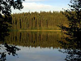

|
Fish Habitat Quiz

Directions: Read the statement and choose the most appropriate response. You may click the helpful hints button at any time. Good luck!
1. The definition of habitat is *** .
a. to live in a place
b. a way of living
c. the measurement of productivity of an ecosystem
d. the biotic environment of an organism
helpful hint
2. All but one of the following statements are true. Choose the exception.
a. Each fish species has a certain range in temperature of water that it can tolerate.
b. Fish are not good indicators of the health of a waterbody.
c. Some species are able to live at the ocean bottom because they are capable of producing their own light.
d. The space that fish occupy has a direct effect on the economy of Saskatchewan.
helpful hint
3.
There are several ways to improve fish habitat. Read the following description, then choose the most likely method that would be the most useful to help improve the area.
A shore area of a river has undergone erosion in the last few years, resulting in sediment entering the water. The area is exposed to the elements, and the water temperature fluctuates. The water becomes quite warm during the hot, dry summer months.
a. Plant willow, green ash or other deep-rooted tree species on the shore.
b. Collect rock and pebbles from the surrounding area and place at the water's edge.
c. Reduce the amount of herbicides entering the area.
d. Clear sediment-trapping debris from the water.
helpful hint
4.
Fish habitat can be improved in many ways. Those responsible for the improvement should include ***.
a. members of the Fish and Wildlife Fund
b. the general public only, as they use the resource
c. those landowners with waterways as part of their land
d. the public, government, companies and private landowners who use the waterways
helpful hint
5. Barriers are detrimental to fish habitat because they ***.
a. prevent oxygen from entering the waterbody inhabited by fish
b. cover portions of the fish habitat thereby decreasing the amount of photosynthesis that can take place which ultimately decreases the amount of vegetation in the area
c. can block the passage of fish to or from breeding grounds
d. add debris to the water causing a build-up of sediment
helpful hint
6.
Diseases and disease conditions can be caused by
all of the following except ***.
a. infectious agents
b. natural or manmade changes in the environment
c. pressure changes in the water
d. pollutants
helpful hint
7. A normally healthy fish may succumb to the effects of disease because of ***.
a. an increase in algae levels in its habitat
b. overcrowding in its habitat
c. a change in the temperature of the water
d. all of the above
helpful hint
8.
Certain diseases that affect fish may be site specific. This means that the disease ***.
a. may attack only one or two body parts and leave the rest of the fish unaffected
b. would infect all fish species living in the same habitat
c. infect only those fish that are of a certain age
d. none of the above
helpful hint
9.
Skeletal deformities in fish may be caused by all of the following except ***.
a. parasites
b. fungus
c. lightening
d. vitamin deficiencies
helpful hint
10.
The afflictions detrimental to fish that may be prevented by human intervention include ***.
a. gas bubble disease and oxygen depletion
b. lipidosis and swim bladder bloat
c. tuberculosis and endogenous pigments
d. heavy metal poisoning and black spot
helpful hint
|